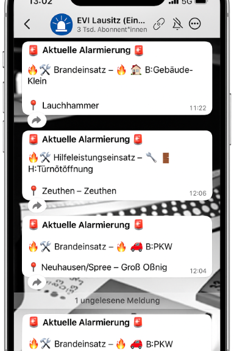

🚒 EVI Twitter Alternative: EVI Lausitz WhatsApp Kanal
Bisher hast du die Einsatzvorinformationen der Leitstelle Cottbus (kurz EVI) über den EVI Twitter Kanal erhalten, doch aufgrund technischer Änderungen wurde dieser Dienst im letzten Jahre eingestellt. Wir möchten diese Lücke schließen und bieten dir mit unserem neuen EVI Lausitz WhatsApp-Kanal eine zuverlässige Alternative.
🔗 Kanal abonnieren

ℹ️ Vorteile des EVI Lausitz WhatsApp-Kanals
✅ Kein zusätzlicher Aufwand: Du musst dich nirgendwo anmelden oder zusätzliche Apps installieren. Die meisten nutzen WhatsApp bereits im Alltag, sodass du sofort loslegen kannst. ✅ Echtzeit-Updates: Erhalte sofortige Benachrichtigungen über Einsätze direkt auf dein Smartphone. ✅ Regionale Abdeckung: Der EVI Lausitz Kanal umfasst alle Einsätze aus den Landkreisen EVI LDS, EVI EE (Elbe Elster), EVI OSL, EVI SPN und der Stadt Cottbus.
📍 Regionale Kanäle für spezifische Landkreise
Wenn du dich für Einsatzinformationen speziell aus deinem Landkreis interessierst, kannst du auch einen der folgenden regionalen Kanäle abonnieren:
- 🟥 Landkreis Elbe-Elster (EE)
- 🟪 Landkreis Oberspreewald Lausitz (OSL)
- 🟩 Landkreis Dahme Spreewald (LDS)
- 🟦 Landkreis Spree-Neiße (SPN)
- 🟨 Kreisfreie Stadt Cottbus
💬 Wie funktioniert es?
1. Folge dem Link: des 👉 EVI Lausitz WhatsApp-Kanals. 2. Abonniere den Kanal: Klicke oben rechts auf "Abonnieren" 3. Bleib informiert: Jederzeit und überall auf dem Laufenden über das Einsatzgeschehen in der Lausitz.